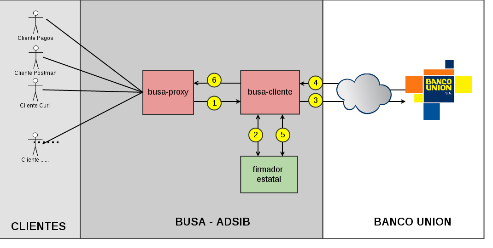

Arquitectura¶
Para el desarrollo de la plataforma, son necesarias las siguientes tareas:
- Un cliente que consuma los servicios de Banco Unión S.A
- Un mecanismo que permita firmar los datos enviados al servicio y verificar las respuestas del mismo
- Un servicio que permita replicar el consumo de los servicios para los sistemas internos de ADSIB en un API REST
Componentes¶
Una vez realizado el análisis de las tareas que debe realizar la plataforma, se proponen los siguiente componentes:
1. busa-cliente¶
Librería que consume el servicio de Banco Unión S.A para obtener los últimos N movimientos en una cuenta bancaria.
El contrato de consumo proveido por Banco Unión S.a requiere que la petición sea enviada en un XML con los siguientes datos :
- Institucion, es la institucaion con la cual se tiene el convenio.
- Método, es la operacion que se esta realizando
- NumeroCuenta, es el numero de cuenta adignado.
- Cantidad, es la cantidad de los ultimos movimientos en la cuenta.
- CodUninet, es el codigo designado por el banco union.
El contrato de consumo proveido por Banco Unión S.a indica que la respuesta será devuelta en un XML con los siguiente datos:
- SaldoInicial, es el monto de dinero con el que se cuenta antes de los n movimientos
- Extracto, contiene el detalle de cada transaccion y contiene los siguiente:
- FechaMovimiento, la fecha del movimiento.
- FechaAdicion, la fecha d la adicion del dinero.
- NumDocumento, es el numero que entregan en la boleta de transacción.
- Descripcion, es la descripción de la transaccion.
- TipoMovimiento, es el tipo de movimiento, puede ser C de depósito o D retiro de dinero.
- Monto, es el monto de la transacción.
- NumMovtoDiario, es un identificador de la transaccion(no deberia repetirse, pero en los ejemplos del banco union se a repetido una vez).
- FecLiteral la fecha de transaccion inluyendo la hora.
- Detalle es un resumen de la transaccion, puede variar en formato.
Para ver la documentación de este componente, dirijase a Java Doc Busa Cliente.
Las peticiones enviadas a Banco Unión S.A requieren ser firmadas con una clave privada y las respuestas requieren ser validadas con la clave pública del banco, para tal efecto, se hará uso del siguiente componente “Firmador Estatal”.
2. firmador-estatal¶
Librería desarrollada por el grupo de desarrollo Firmador Estatal. conformado por diferentes instituciones del estado.
Se empleará especificamente la librería para realizar firmado y verificación de un mensaje SOAP en XML.
Para ver la documentación de este componente externo, dirijase a Java Doc Firmador Estatal.
3. busa-proxy¶
Capa que provee una API REST para los sistemas de ADSIB y otros clientes (Ej.: Curl, Postman, etc. ).
La funcionalidad inicial será la de obtener los últimos N movimientos en una cuenta bancaria para lo cuál hará uso del componente busa-cliente.
Para ver la documentación de la API, dirijase a Api Doc Busa Proxy.
Interacción entre componentes¶
Una vez que se definen los componentes necesarios para conformar la plataforma, se tiene el siguiente flujo de trabajo:
Consumo de un sistema de ADSIB u otro cliente¶
Un sistema de ADSIB u otro cliente (Ej: Curl, Postman, etc.) se conecta a la API de busa-proxy pidiendo los últimos n movimientos realizados sobre la cuenta bancaria de ADSIB.
1. busa-proxy a busa-cliente¶
busa-proxy llama al método de busa-cliente que le permite comunicarse con Banco Unión S.A y le envía los parámetros del cliente.
2. busa-cliente a firmador-estatal¶
busa-cliente forma la petició a enviar a Banco Unión S.A y le pide al firmador-estatal que firme el mensaje SOAP con su clave privada.
3. busa-cliente a Banco Unión S.A¶
busa-cliente envía la solicitud firmada al Banco Unión S.A.
4. Banco Unión S.A a busa-cliente¶
Banco Unión S.A le devuelve a busa-cliente los detalles solicitados en un mensaje SOAP firmado con su clave privada.
5. busa-cliente a firmador-estatal¶
busa-cliente envía la respuesta y la clave pública de Banco Unión S.A al firmador estatal para que valide la firma.
6. busa-cliente a busa-proxy¶
busa-cliente devuelve a busa-proxy la respuesta a la solicitud de su cliente.